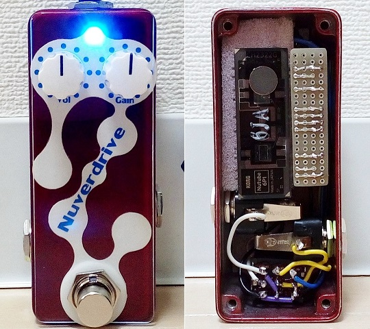
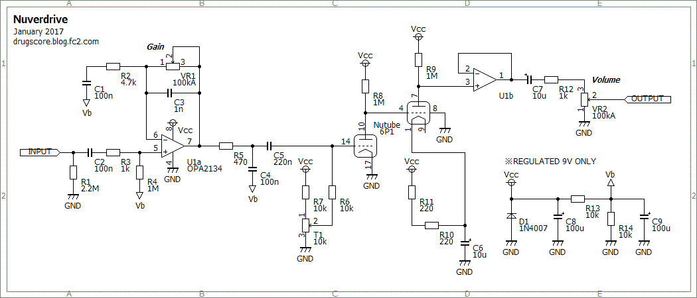
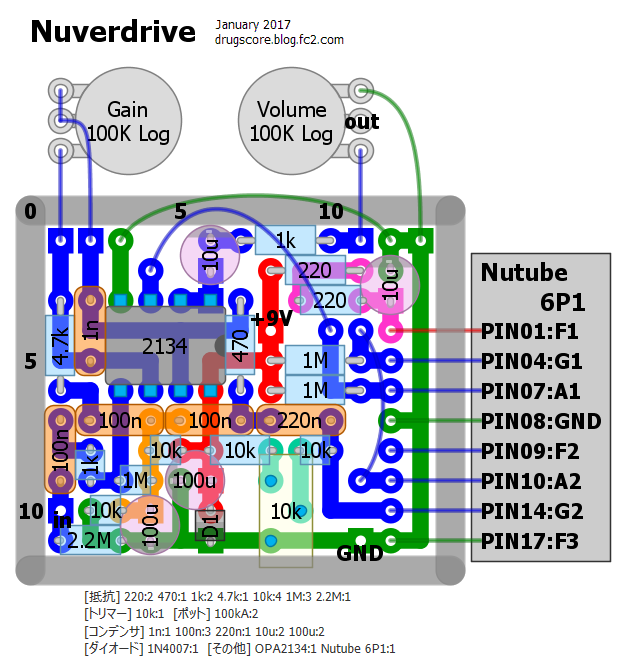
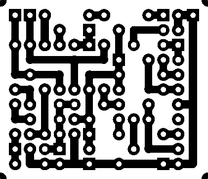
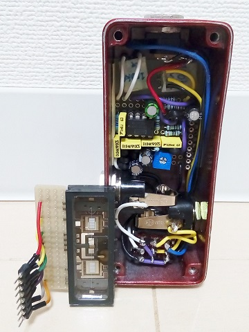
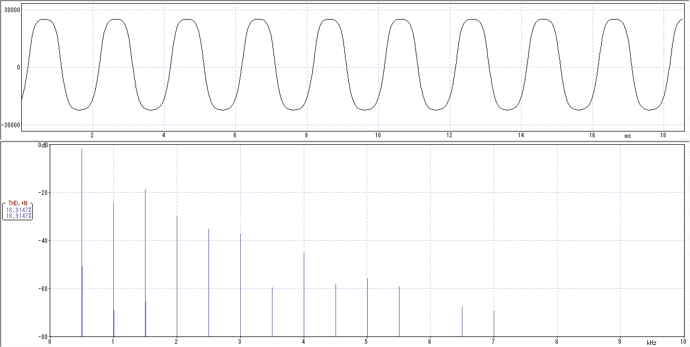

Nuverdrive
2017年01月17日 カテゴリー：自作エフェクター（アナログ）

Nutubeという新しい真空管が発売されましたので、久々にエフェクターを作りました。Nutubeを使ったオーバードライブなので、Nuverdrive（ニューバードライブ）という安直な名前です。
Nutubeで作る自作エフェクター・コンテストに応募してみようと思っています。回路図等の詳細はコンテスト審査後に公開する予定です。
---以上2016年11月27日記載、以下2017年1月17日追記---
▽回路図
※あまりオススメできる回路ではないので、参考程度としていただきたいと思います。

まずせっかくの小型真空管なので、小さいケースに入れてみようと考えました。回路をできるだけシンプルにするため、使用ガイドのFETを省いて無理やり2段直結にしてみます。試行錯誤の結果、アノード抵抗1MΩぐらいでうまく動作してくれました。それでもゲインがトータルで10倍程度にしかならなかったため、前段にブースターを組み込みました。オペアンプはFET入力のもの（TL072等）であれば大丈夫です。バイアス調整トリマーは最もゲインが高くなる位置に調整しましたが、大体真ん中で問題ありません。
＜フィラメントについて＞
使用ガイドでは、わざわざレギュレータで3.3Vを作ってから抵抗→フィラメントとつないであります。この理由は、電源電圧が多少変動してもフィラメントにかかる電圧が変わらないようにするためだと思います。今回のエフェクターはレギュレータを使用していませんので、必ず安定化された9V電源を使用します（新品の電池を使用した場合、おそらくフィラメントの定格を超えてしまいます）。
▽レイアウト

▽PCB（横35.6mm縦30.5mm）

ケースはGarrettaudioのSize S（HAMMOND 1590A類似サイズ）です。一応Nutubeをスポンジではさんだのですが、フットスイッチのカチッという振動が伝わってマイクロフォニックノイズがかなり出てしまいます。Nutubeへの配線が短いのが原因だろうと思います。どうやらこの小さいケースでは無理があったようです。
音については確かに真空管っぽい歪みになっているように思います。しかしながら本当ならNutubeのみでゲインを稼ぎたいところです。エンドウ.氏の作例のようにNutubeを2個使えばよいのですが、それだとあまり小型にできないし、費用もかかります。ということで、新たにハイゲインタイプのNutubeが開発されることを期待したいです。
---以下2017年3月6日追記---
「Nutubeで作る自作エフェクター・コンテスト」で佳作を受賞しました。下記イベント・レポートの動画で音を聴くことができます。スイッチオン時にキーンというマイクロフォニックノイズも出ています。
・KORG / Nutube BUILDER SUMMITイベント・レポート
Nutubeとスポンジを取り出した内部写真を撮りました。

Nutubeの向きを変えて配線を長くし、配線材を柔らかいものにすると少しはマイクロフォニックノイズが減るかもしれません。
波形も測定しました。

丸みを帯びた波形です。思ったより奇数次倍音が出ていました。